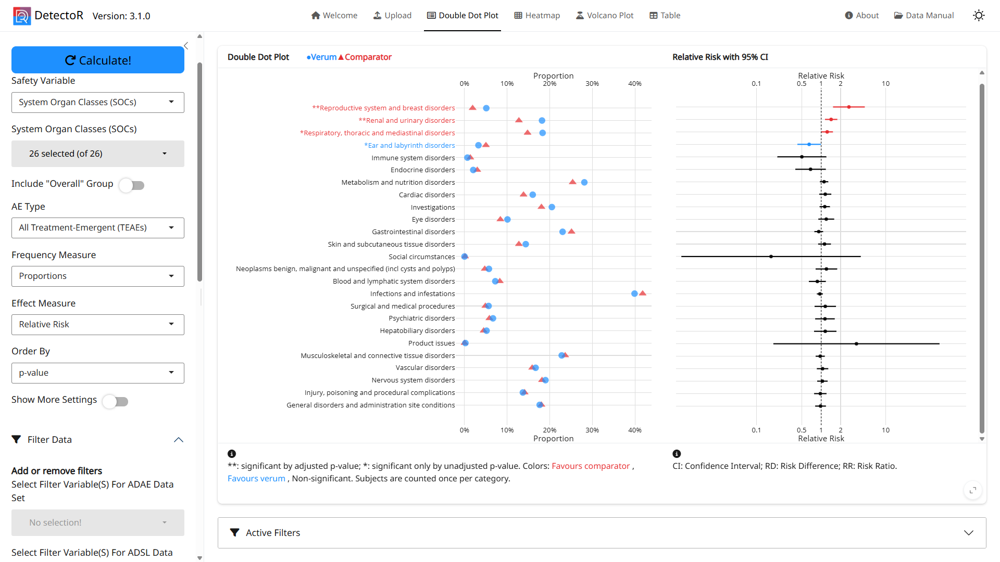

DetectoR is an interactive safety analytics application designed to uncover meaningful patterns in adverse event data that may remain hidden in standard tables and listings. It enables rapid comparison of adverse event incidence across treatment groups, helping teams identify where notable differences emerge and assess their potential relevance. Through intuitive visualizations and automated signal detection methods, users can seamlessly drill down from broad safety categories to the specific adverse event terms that contribute most strongly to observed findings. The app supports exploration at multiple levels of the MedDRA hierarchy, making it easier to understand both overarching safety trends and the events driving them. Advanced multiplicity-adjusted analyses help focus attention on the most meaningful signals while reducing noise from multiple comparisons. DetectoR also allows targeted investigation of different adverse event classifications, such as treatment-emergent, serious, or drug-related events, providing a comprehensive view of the safety profile. Flexible subgroup analyses further enable users to assess whether observed patterns are consistent across patient populations or concentrated within specific groups. By combining statistical rigor with interactive visual exploration, DetectoR helps study teams efficiently identify, understand, and communicate potential safety signals.